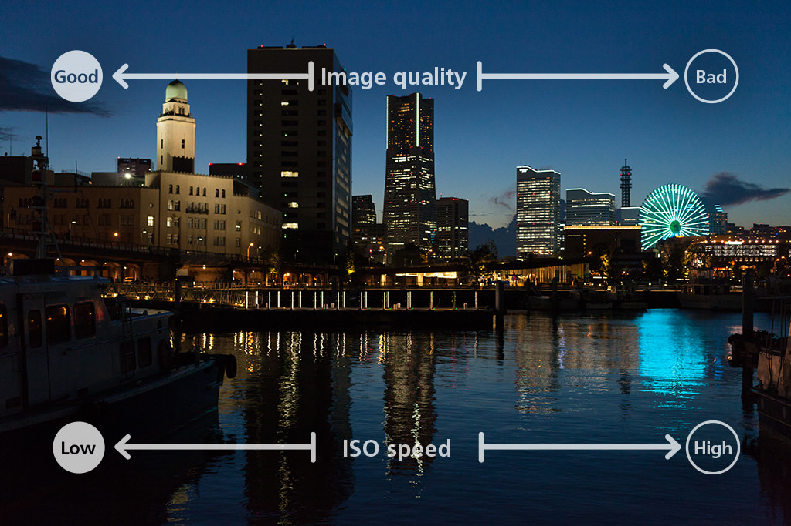
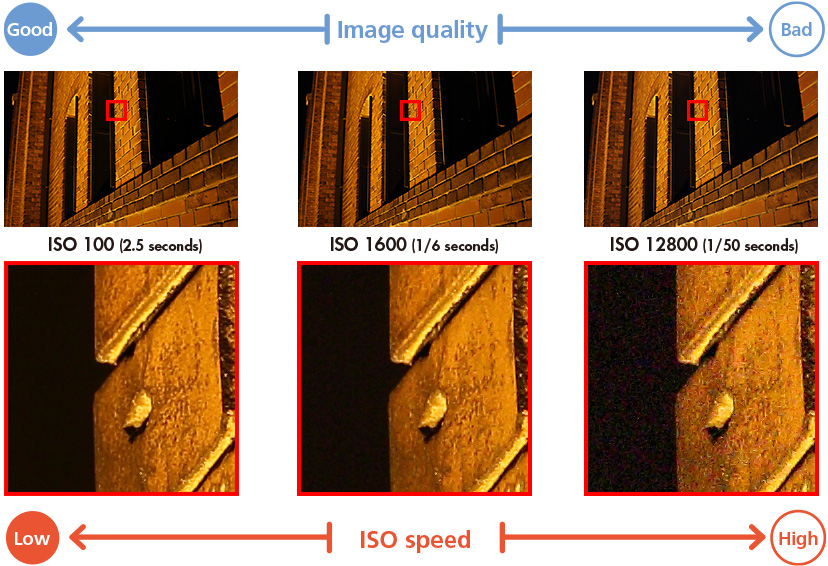
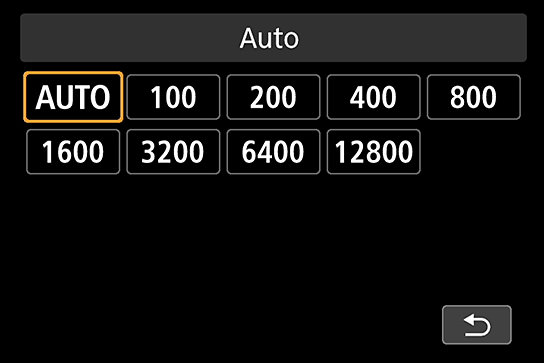
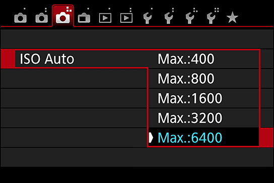

Photography Basic | Part 3
ISO Speed
ISO speed plays an equally important role as aperture and shutter speed in its effect on exposure. Now let us learn more about the advantages and disadvantages of turning up the ISO speed.

TIn a low light environment, we can increase the shutter speed by turning up the ISO speed
Points-to-note
- Within Normal ISO speed range, the lower the ISO speed, the higher the image quality.
- Increasing the ISO speed allows the camera to set a faster shutter speed.
- Noise occurs at higher ISO speeds.
To put it simply, ISO speed is the image sensor’s capability to sense light, reflected as a numerical value. It is said that exposure makes or breaks a picture, but ISO speed is also a major factor in determining exposure.
If aperture is the width of the light ray passing through and shutter speed is the time taken for the light ray to pass through, then ISO speed describes the image sensor’s capability in sensing light. The higher the value, the more sensitive the camera to light. Even under dark environments or when taking pictures of night scenery, we can still take good, bright pictures. In other words, assuming that we don’t need the image to be brighter, a higher ISO speed makes a faster shutter speed possible. Simply by adjusting the ISO speed, we increase the shutter speed. By doing so, we can prevent the blurring that results from camera shake or subject motion blur.
A higher ISO speed also allows us to achieve a narrower aperture without compromising on image brightness, as long as we use a fixed shutter speed (such as by using Shutter-priority AE mode).
As much as I am saying that ISO speed is such a useful function, it has its disadvantages too. The higher the ISO speed, the more noise it generates. The overall image comes up grainy. Yes, there are cameras with noise reduction features around, but most photographers will still try their best keep the ISO speed to a setting that does enough to prevent blurring from camera shake. Usually, this is as close to the base ISO speed (lowest Normal ISO speed) as possible, but may be higher depending on photographic intent and shooting conditions.
For instance, you might be able to get away with base ISO speed when photographing light trails and buildings at night. However, you would need a higher ISO speed to prevent camera shake when shooting handheld at night. And if you want to capture stars in your shot, even if you use a tripod, you will certainly need both a slow shutter speed and a very high ISO speed.
From left:
EOS 5D Mark III/ EF50mm f/1.4 USM/ FL: 50mm/ Aperture-priority AE (f/5.6, 2.5 sec, EV-0.7) / ISO 100/ WB: Auto
EOS 5D Mark III/ EF50mm f/1.4 USM/ FL: 50mm/ Aperture-priority AE (f/5.6, 1/6 sec, EV-0.7)/ ISO 1600/ WB: Auto
EOS 5D Mark III/ EF50mm f/1.4 USM/ FL: 50mm/ Aperture-priority AE (f/5.6, 1/50 sec, EV-0.7)/ ISO 12800/ WB: Auto
Notice how the noise in the image increases as higher ISO speeds are used. Depending on the situation, things might turn up very conspicuous. Make sure you do not turn ISO speed up too high!
Keyword: ISO AUTO
When moving from a bright environment to a dark one, remember to turn up the ISO speed, otherwise there will be a risk of camera shake. If you think you may forget, you can leave the camera in ISO AUTO mode. This is a convenient feature that automatically adjusts the ISO speed on the camera so that the shutter speed setting will be fast enough to prevent camera shake. It can also prevent the camera from using the same high ISO speed to take photos even after you have shifted to a bright environment from a dark one.
The ISO AUTO screen
When setting ISO AUTO, select [AUTO] on the screen for setting. When AUTO is selected, the camera will automatically determine the ISO speed according to the scene and the picture mode. This is a very convenient feature that helps stabilize the image when there is camera shake and subject motion blur.
Setting the upper limit for ISO AUTO
When setting the ISO speed to AUTO, it is also possible set the upper limit of the speed that the camera can operate at. If the upper limit is set higher, even though it can take pictures easily during dark scenes or with dark subjects, there will be more noise. Set the ISO speed to something that will not affect the image quality too badly.